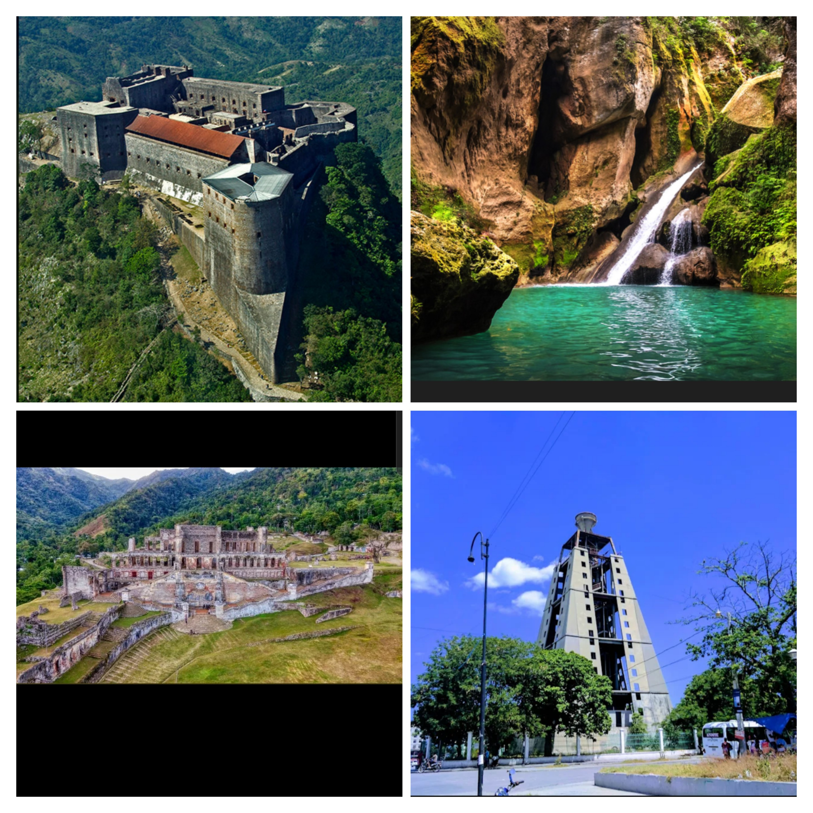

My name is Ruth Shalina Jacquet, I am from Haiti and I am 20 years old. I am an introverted person
I have two(2) younger sisters, thanks to God both of my parents are alive.
I am a beginner programmer currently studying Computer Programming.
I am learning:
- Web Scripting
- Pyton
- JavaScript
- SQL(StructuredQuery Langauge)
There are many things I enjoy doing in life. But what I love doing the most are:
- Traveling
I enjoy it because it allows me to discover new cultures, new varieties of food, and meet new people. - Reading
I mostly read fiction. I enjoy reading this genre because it allows me to escape into an imaginary and
magical world,it helps me to pause the world around me,and dive into a world where the only limit is my imagination - Listening to music
I don't have a preffered music genre, I listen to all kinds of music, whatever it may be.It could be classical musique, rad or kompa(it is the music genre that originated in Haiti).
At the moment, the musique I listen to the most are: Mr/Mme by Loic Nottet(it is a frensh song) and Me and You by Coco Jones,Tyler Williams.
I have been able to visit some places in Haiti, and here they are:
